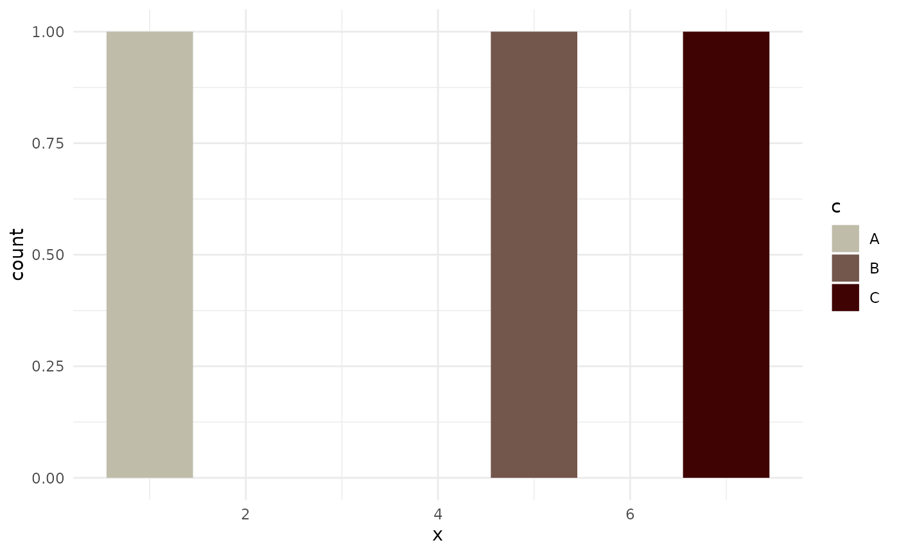

Introduction
introduction.RmdWhat this Package Does
tayloRswift is a little package to add color palettes to ggplot made graphics inspired by Taylor Swift album covers.
There are two functions in the package.
scale_color_taylor()
For color adjustments, use scale_color_taylor()
data <- data.frame(c = LETTERS[1:3],
x = c(1,5,7),
y = c(5,9,13))
ggplot(data, aes(x =x, y = y, color = c)) +
geom_point(size = 4) +
scale_color_taylor(palette = "taylorRed")+
theme_minimal()
scale_fill_taylor()
For fill, use scale_fill_taylor()
ggplot(data, aes(x=x, fill = c))+
geom_bar()+
theme_minimal()+
scale_fill_taylor(palette = "taylorRed")